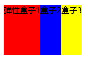
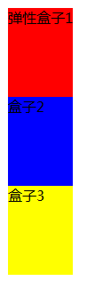

语法：
box-orient:取值
说明：
box-orient定义弹性盒子内部中“子元素”的方向
注意，在你使用弹性盒子模型之前，你必须先把父元素display属性设置为box或inline-box后，该元素才具有弹性盒子模型
| 属性值 | 说明 |
|---|---|
| horizontal | 弹性盒子“从左到右”在一条水平线上显示它的“子元素” |
| vertical | 弹性盒子“从上到下”在一条垂直线上显示它的“子元素” |
| inline-axis | 弹性盒子“沿着内联轴”显示它的“子元素”（默认值） |
| block-axis | 弹性盒子“沿着块轴”显示它的“子元素” |
使用方法：
box-orient:horizontal; /*显示在一条水平线上*/
兼容性：
- 浅绿 = 支持
- 红色 = 不支持
- 粉色 = 部分支持
| 支持版本\类型 | IE | Firefox | Safari | Chrome | Opera |
|---|---|---|---|---|---|
| 较早版本 | 6.0-11.0 | 4.0.-25.0 -moz- | 5.1.7 -webkit- | 4.0-31.0 -webkit- | 9.5-14.0 |
| 较新版本 | 15.0-18.0 -webkit- |
橘色说明要加浏览器的前缀
事例：
horizontal
body{
display:-moz-box; /*定义元素为盒子显示，注意书写*/
-moz-box-orient:horizontal; /*定义盒子元素内的元素从左到右流动显示*/
}
div{height:100px;}
#box1{background:red;}
#box2{background:blue;}
#box3{background:yellow;}

vertical